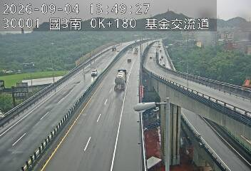

道路駕駛
道路影像駕駛總覽
國道 3 號 南向主線
基金交流道附近｜鏡頭試點
方向已校正

影像備援模式
國 3 南向｜0K+180
最近可用畫面
切鏡邏輯待接入
車道與車速分析
尚未啟用判讀
此鏡頭已人工確認為南向主線 2 線道；車道速度、較順車道與前方壅塞結論，需通過連續影像與後端分析驗證後才顯示。
連續影像尚未啟用
直接播放官方 MJPEG 在部分手機瀏覽器會出現黑屏或停格，因此暫不作為使用者功能。完成影音服務轉檔與健康檢查後，才會啟用連續影像。